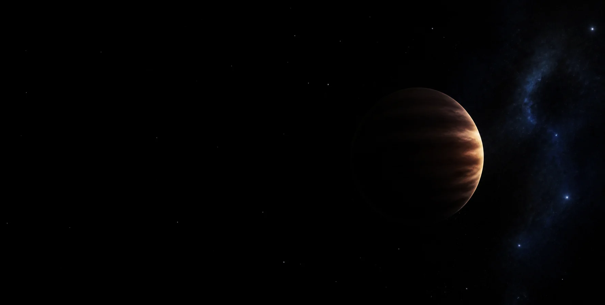
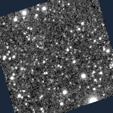

Theo dấu
một thế giới
gần như vô hình.
Một sao lùn nâu rất lạnh. Hai lần nhìn bằng hồng ngoại. Cùng tìm điểm đổi vị trí giữa những ngôi sao.
So ảnh
Tìm chấm sáng đổi vị trí.
Xem bằng chứng
Kiểm tra những gì phép đo còn chưa chắc.
Ghi nhận
Điều bạn thấy giúp lần kiểm tra tiếp theo.
Bạn có thấy điểm đổi chỗ?
Ảnh quan sát thật
Hướng bắc ở trên · hướng đông bên tráiKéo vạch qua chấm được đánh dấu để so vị trí trước và sau.
Hai ảnh dùng cùng mức kéo sáng. Vòng nét đứt là dự báo từ astrometry cũ, không phải phát hiện của model.
Ảnh đơn & cấu hình đối chiếu
Phép đo chuyển động & mức rõ của tín hiệu
Cộng ảnh theo epoch
Dịch chuyển · sai số mô hình
—
Sai số 1σ theo mô hình có điều kiện; chưa bao phủ mọi sai số hệ thống.
S/N khẩu độ
| Epoch | Ảnh đơn tốt nhất | Ảnh cộng |
|---|
S/N khẩu độ tại vị trí đã fit; có truyền covariance do nội suy. Không phải độ tin cậy phát hiện mù.
● Đo được, ellipse 68% ◇ Dự báo ngoài
Thấy thay đổi chưa đủ
để kết luận.
Ảnh mờ, nguồn chồng nhau hoặc cách xử lý có thể làm một chấm sáng trông như đã di chuyển. Chúng tôi tiêm nguồn có vị trí biết trước vào nền ảnh thật để đo mức sai lệch.
| Mô hình thử | Độ sáng | Sai lệch ghép cặp cũ / mới | Cặp hợp lệ | Fit cũ / mới | RMS mọi fit mới | Trong vùng sai số 68% |
|---|
Xem 30 vị trí kiểm thử trên ảnh thật

Vòng cam là vị trí kiểm thử, không phải các thiên thể được phát hiện.
Căn chỉnh theo sao Gaia DR3
Kiểm chứng Gaia DR3
● Căn chỉnh ● Giữ ngoài fit + WISE 0855 · Bắc ↑ / Đông ←
| Cấu hình | RMS sao giữ lại | Đổi tập sao | Bỏ 1 sao, lớn nhất | Thử affine |
|---|
Các độ thay đổi vector tính bằng arcsec. Sao giữ lại không tham gia fit căn chỉnh cục bộ; Gaia cũng đã góp phần vào WCS đầu vào của SPHEREx.
Ngân sách sai số của vector
Chiếu covariance theo hướng vector rồi cộng theo bình phương. Hạng giữ lại có thể đếm một phần noise hai lần; các sai số ePSF và blending vẫn chưa được mô phỏng đầy đủ.
Nguồn giả trên nền thật: giới hạn còn lại
| Độ sáng × WISE | Loại nguồn | Trong ellipse 68% | RMS sai lệch |
|---|
8 vị trí cố định, hai độ sáng, hai kiểu chuyển động. Dùng chung nền ảnh và ePSF để tiêm/fit, chưa thêm shot noise; đây là chẩn đoán có tương quan, chưa phải hiệu chuẩn completeness hay false-positive rate.
Đối chiếu thí nghiệm 0.4.0 trước đó
Fit nhiều nguồn · thử nghiệm
Chưa đạt tiêu chí thay mặc định| Phổ | Độ sáng | RMS một nguồn | RMS nhiều nguồn | Hợp lệ: một / nhiều | Trong ellipse 68%: một / nhiều |
|---|